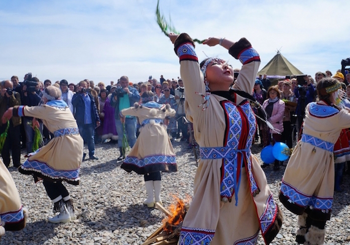
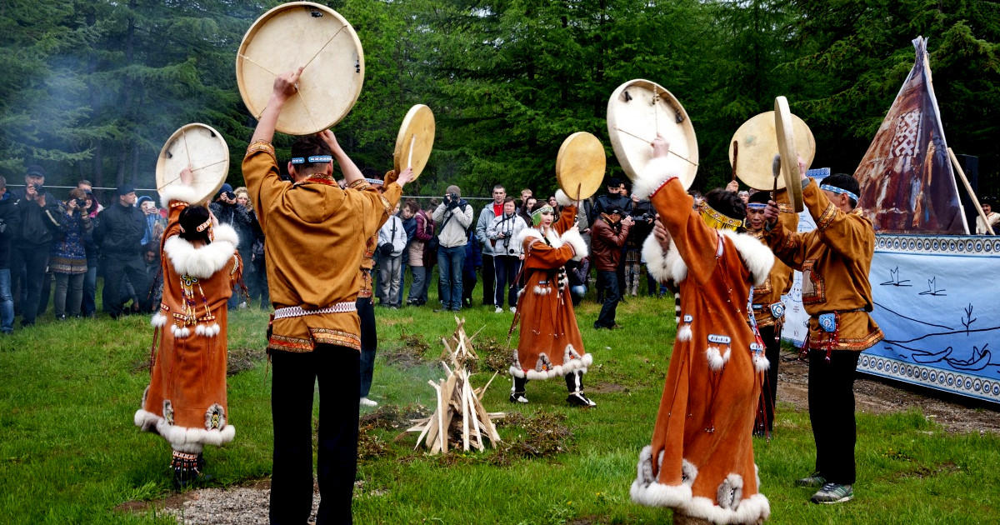

<!DOCTYPE html>
<html lang="en">
<head>
    <meta charset="UTF-8">
    <meta name="viewport" content="width=device-width, initial-scale=1.0">
    <link rel="stylesheet" , href="style.css">
    <script src="../scripts.js" ></script>
    <title>Этнографическое разнообразие народов Российской Федерации</title>
</head>
<body>
    <div class="head">
        <div class = 'info'>
            <h1>Магаданская область</h1>
        </div>
        <div class="buttons">
            <div class="c1">
                <button id = 'b1' onclick="tambov()" ></button>
                <button id = 'b2' onclick="magadan()"></button>
            </div>
            <div class="c2">
                <button id = 'b3' onclick="mordovia()"></button>
                <button id = 'b4' onclick="main()">Главная</button>
                <button id = 'b5' onclick="ingush()"></button>
            </div>
            <div class="c3">
                <button id = 'b6' onclick="IN()"></button>
            </div>
        </div>
    </div>
    <div class="body">
        <div class="info">
            <h1>Справка</h1>
            <p>
                Магадан - это один из самых северных регионов России, расположенный на берегу Охотского 
                моря. Несмотря на суровые климатические условия, народы Магадана воплощают в своей 
                бытности замечательное сочетание традиций и современности
            </p>
        </div>
        <div class="traditions">
            <h1>Традиции</h1>
            <div class="carts">
                <div class = 't'>
                    <h1>Бакылдыдяк</h1>
                    
                    <p>
                        «Бакылдыдяк» — это региональный эвенский праздник первой рыбы, который 
                        традиционно проводится в Магаданской области на берегу Охотского моря.
                        Название празднику дал эвенский термин, который в переводе на русский 
                        означает «встреча». В этот день участники праздника собираются на побережье 
                        Охотского моря, чтобы отметить встречу друзей и радость от вылова первой в 
                        сезоне красной рыбы.
                        В рамках праздника проводятся обряды, состязания и выставки декоративноприкладного творчества.
                        «Бакылдыдяк» был возрождён на Колыме в 1992 году и проводится каждые два 
                        года
                    </p>
                </div>
                <div class = 't'>
                    <h1>Хэбденек</h1>
                    
                    <p>
                        Хэбденек — эвенский Новый год, который отмечают в день летнего 
                        солнцестояния.
                        Эвены верили, что в это время приоткрываются врата между мирами и духи 
                        слышат всё, о чём просят люди.
                        С 1997 года Хэбденек стали праздновать в Магадане, в районе устья реки Дукча.
                        Как и в старину, желающие собираются в пять часов утра, чтобы увидеть первые 
                        лучи нового солнца. Старейшины проводят обряд кормления огня и благодарения 
                        Земли. На разных площадках устраивают выставку ремёсел коренных народов 
                        Севера, готовят магаданскую уху с чаем из таёжных трав и участвуют в хороводе 
                        хэде под звуки бубнов.
                        Одна из любимых традиций Хэбденека — загадывание желаний. Чтобы они 
                        исполнились, нужно завязать ленточку на специальную верёвку — «дэлбургэ».
                    </p>
                </div>
                <div class = 't'>
                    <h1>Чайрудяк</h1>
                    
                    <p>
                        Чайрудяк – это красивый эвенский праздник, означающий «чаепитие» или «беседа за 
                        чаем», имеющий давние традиции, сложившиеся у эвенов – жителей тайги и тундры.
                        В Ягоднинском районе он отмечается с 2010 года. За прошедшие годы праздник стал веселой 
                        традицией, полюбившейся и взрослым, и детям, проживающим на территории района.
                    </p>
                </div>
            </div>
        </div>
        <div class="facts">
            <h1>Факты</h1>
            <div class="fact-info">
                <ul>
                    <li>В окрестностях Тамбова действительно обитают волки, но их популяция невелика, и они 
                        занесены в региональную Красную книгу. Широко известная фраза “Тамбовский волк тебе 
                        товарищ” впервые прозвучала в советском фильме “Дело Румянцева”, но местных жителей с 
                        этими хищниками связывают давние отношения. Ещё во времена набегов кочевников, 
                        отколовшихся от Золотой Орды, тамбовские воины надевали поверх доспехов волчьи шкуры – это 
                        пугало и врагов, и их лошадей, которые от волчьего запаха впадали в панику.
                    </li>
                    <li>
                        Тамбов окружён густыми лесами, и добытая в них древесина послужила сырьём для 
                        строительства первого флота в Российской империи. Сейчас леса тут уже не вырубают, к тому же 
                        из-за бесконтрольной вырубки в прошлом их и так осталось мало. Несмотря на это, экология в 
                        Тамбове и окрестностях до сих пор остаётся одной из самых благоприятных среди всех городов 
                        России.
                    </li>
                    <li>
                        На гербе Тамбова неспроста изображены пчёлы и улей. Местные жители с давних времён 
                        славятся своими умениями в области бортничества, и в наше время здесь тоже производится 
                        огромный объём мёда. Вклад тамбовчан в развитие бортничества в России и было решено 
                        отразить на городском гербе.
                    </li>
                    <li>
                        В Тамбове было рождено множество известных людей, навсегда оставивших неизгладимый 
                        след в истории. Отсюда родом были знаменитый композитор Сергей Рахманинов, жена Пушкина 
                        Наталья Гончарова, партизан Зоя Космодемьянская и другие. А российский литератор Гавриил 
                        Державин успел на протяжении 2 лет побыть главой Тамбовского наместничества.
                    </li>
                    <li>
                        Знаменитый селекционер Иван Мичурин проводил свои работы именно под Тамбовом. За годы 
                        изысканий он создал более 300 сортов яблок, груш, слив и других фруктов. Многие из них 
                        получили широкое распространение, причём не только в России, но и за её пределами.
                    </li>
                </ul>
            </div>
        </div>
        <div class="facts">
            
        </div>
    </body>
</body>
</html>